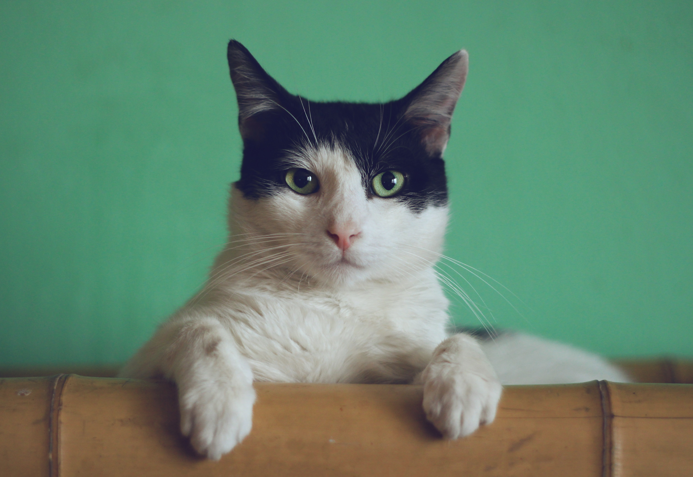

고양이(학명: Felis silvestris catus)는 식육목 고양이과에 속하는 포유류 동물이다. 들고양이(wild cat)는 약 10만 년에서 7만 년 전부터 존재했다. 2007년 기준으로 최근의 연구에 따르면 길들여진 고양이의 기원은 약 1만 년 전 근동지방에서 스스로 숲 속을 나와 사람들이 모여사는 마을에 대담하게 정착하여 길들여진 5마리 정도의 아프리카들고양이(학명: Felis lybica)로 추측된다.
고양이는 인류로부터 오랫동안 반려동물로 사랑받아 왔다. 실례로 고대 이집트의 벽화에는 고양이를 새 사냥에 이용하는 그림이 있다. 동아시아의 십이지에는 포함되어 있지 않지만, 타이와 베트남에서는 토끼 대신 고양이가 십이지 중 하나이다.